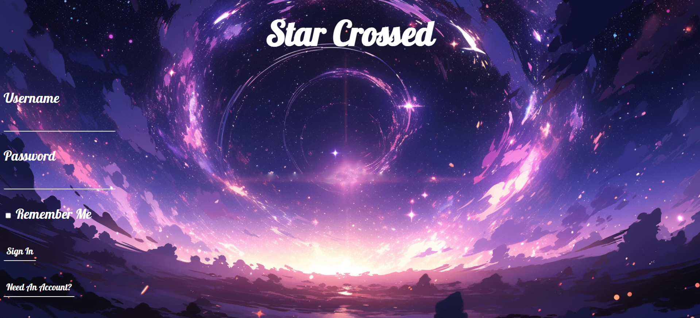

The intention of the Star Crossed application was to assist teens, more specifically teens in high school, with socializing with others and forming new relationships via an online application. The application pairs oneself with others solely based on their star sign and also gives oneself advice about how to strengthen one’s relationship with those with a compatible star sign to theirs. During the development process of this application, I was the back-end developer, learning and using Flask in order to create the application’s sign up and login page as well as the application’s ability to show which star sign one is compatible with as well as which users have a certain star sign. During this project, I learned how to handle SQL databases, use SQLAlchemy, use Jinja2 templates, and use Flask to allow certain content to be implemented onto certain HTML pages when their templates are rendered and when the app route is designated to be said pages. Learning Flask proved to be a challenge as well as debugging the code, especially since I was only used to creating programs in Python that didn’t involve the importation of complex modules, their functions, and their classes. With the assistance of Codecademy’s tutorials and Stack Overflow, I was able to learn the basic yet necessary mechanics of Flask that I needed to program the sign up and login page of my team’s application as well as figure out why my code had the errors it did as well as how to fix it. I also initially had a problem with running my program on VSCode, which was solved by viewing the VSCode documentation for Flask and figuring out how to launch a virtual environment for my group’s application. Throughout the duration of this project, I communicated with my team multiple times regarding deadlines for the project, the layout of the project, and my progress on the project, allowing our group to get the majority of our desired features for the application done on time.
The intention of this program is to create an online ordering system for a fast food company to utilize to make ordering food for customers exponentially quicker. I was the head programmer for this project, and I learned that nested loops may not be ideal when programming anything in Python and that I should refer back to functions in my future programs instead of encasing the functions within each other. During this project, there were minor errors in my code that were easily fixed without doing extra research by doing certain actions such as raising exceptions as well as tracing back my code and figuring out why the program is calculating each item given incorrectly. I also had issues implementing one of the while loops in my program, leading to me importing sys to get the program to force quit if the user doesn’t want to order anything else after the order is printed for them and the user is asked if they wanted to do the aforementioned thing by the program. I was able to lead my partner and I to completing the code within a day and well before the deadline for this program.